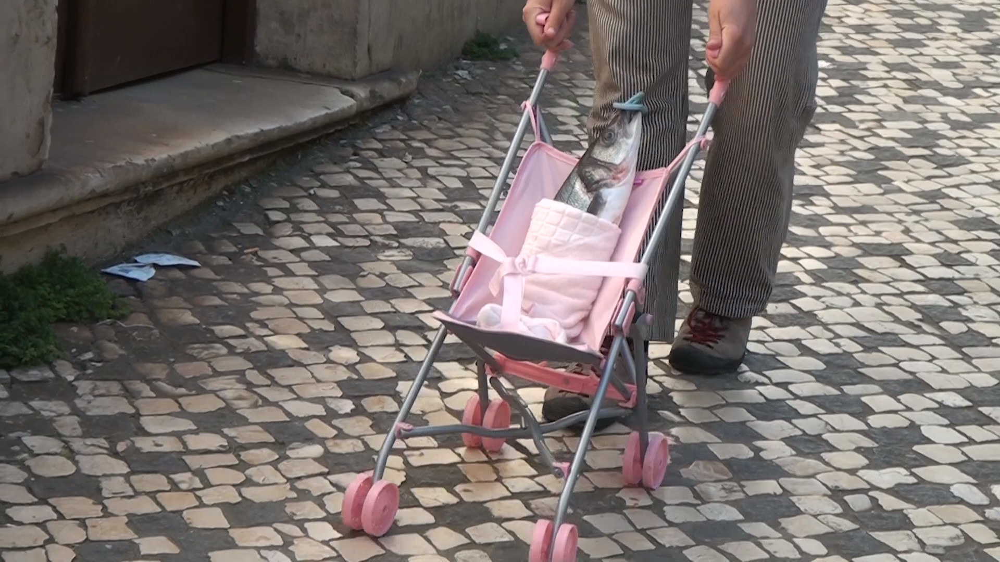
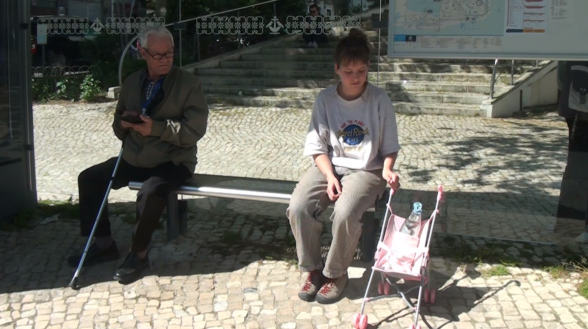
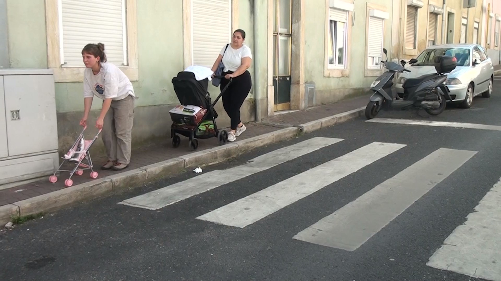
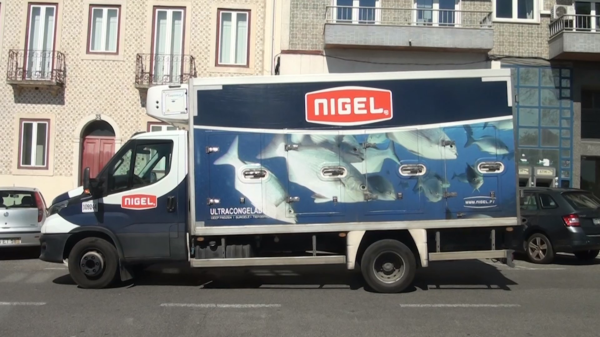
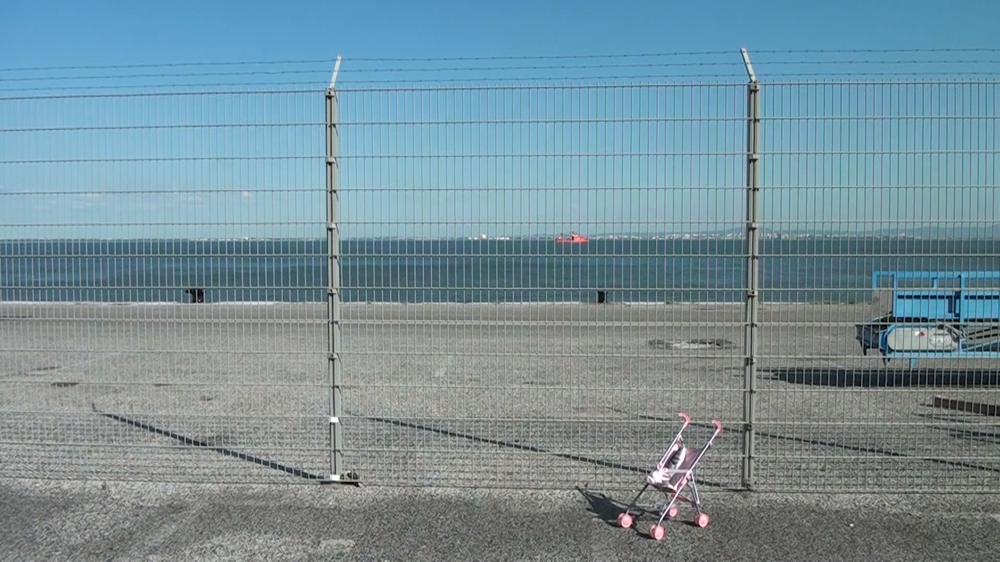
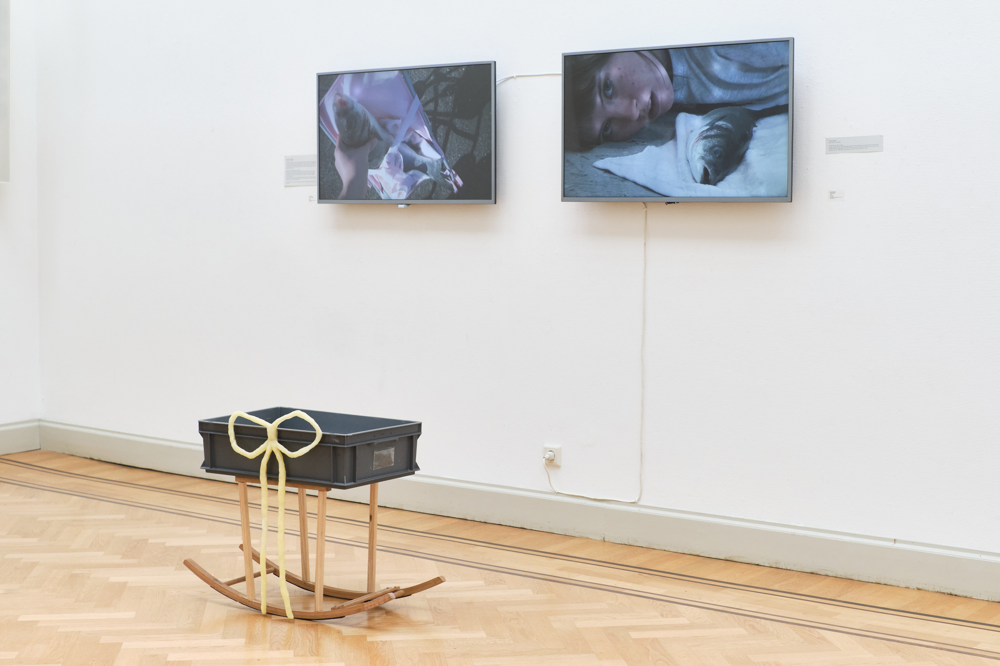
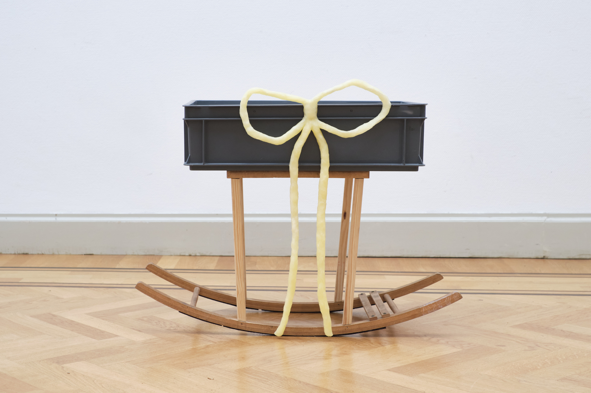
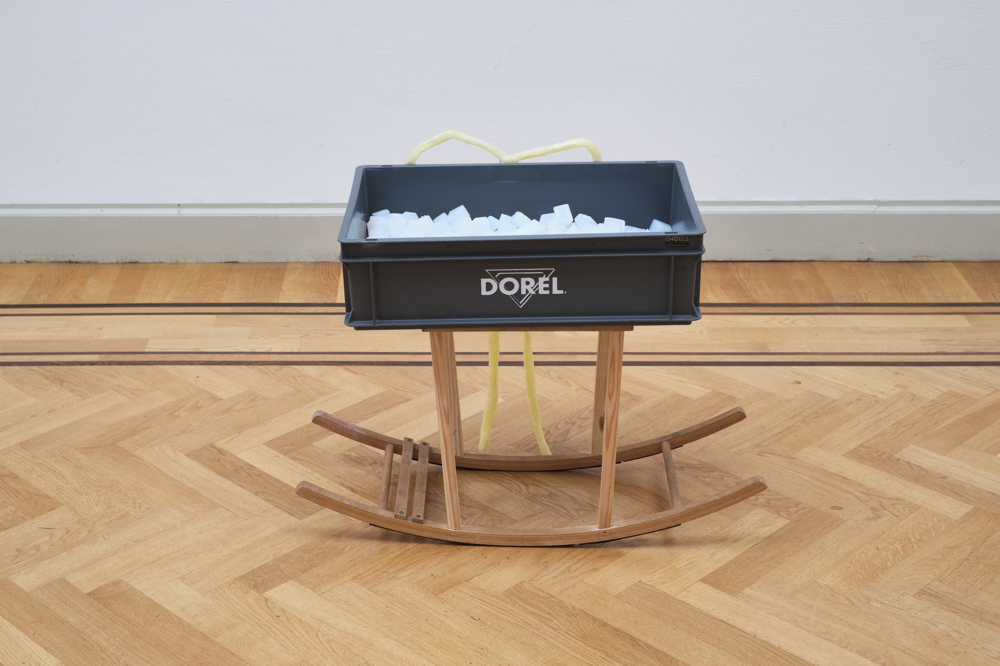

The Fish (walking), 2025
Stills from a film created while on residency in Lisbon, Portugal.
I went to the grocery store in the morning and bought this dead fish. I hadn’t bought an animal product in ten years, so my heart was racing. I told the woman at the fish stall I needed it in its entirety. She was confused and tried to persuade me not to. She began to cut off the fins anyway and I had to tell her no, no, please keep them. She handed me the fish wrapped up in its plastic bag with an uneasy look on her face. She tried to ask me what I was going to do with it but I couldn’t explain in Portuguese that I was going to make it my baby.
Human brains are incredibly reliant on categories.
Animals in human societies are either workers, pets, food products, or game. The others are exotic, wild creatures which we still capture. We make easy and clear distinctions between these categories. Intentionally killed, farmed, domesticated animals are food, and there is no guilt or shame linked to their deaths. Animals which were once owned by humans or otherwise not intended to be killed we can have compassion for.
Some animals, like fish, can belong to both categories. But the underlying fact is the same: they do not have agency. They are more objects than beings. Their bodies and homes are ours to farm, to take over in excess for our own comfort and indulgence.
I ask; what does it take for humans to have empathy for a fish? If it is dressed it like a human baby, can we care for it?
The Fish (crib), 2025
A crib made out of a crate full of ice, which could cradle a fish. Sculpture created in combination with two presented video works.